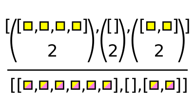

How to find all combinations of elements: Cartesian (cross) product and “n choose k”#
import awkward as ak
import numpy as np
Motivation#
In non-array code that operates on arbitrary data structures, such as Python for loops and Python objects, doubly nested for loops like the following are pretty common:
class City:
def __init__(self, name, latitude, longitude):
self.name = name
self.latitude = latitude
self.longitude = longitude
cities_us = [
City("New York", 40.7128, -74.0060),
City("Los Angeles", 34.0522, -118.2437),
City("Chicago", 41.8781, -87.6298),
]
cities_canada = [
City("Toronto", 43.6510, -79.3470),
City("Vancouver", 49.2827, -123.1207),
City("Montreal", 45.5017, -73.5673),
]
Cartesian product:
class CityPair:
def __init__(self, city1, city2):
self.city1 = city1
self.city2 = city2
def __repr__(self):
return f"<CityPair {self.city1.name} {self.city2.name}>"
pairs = []
for city_us in cities_us:
for city_canada in cities_canada:
pairs.append(CityPair(city_us, city_canada))
pairs
[<CityPair New York Toronto>,
<CityPair New York Vancouver>,
<CityPair New York Montreal>,
<CityPair Los Angeles Toronto>,
<CityPair Los Angeles Vancouver>,
<CityPair Los Angeles Montreal>,
<CityPair Chicago Toronto>,
<CityPair Chicago Vancouver>,
<CityPair Chicago Montreal>]
and “n choose k” (combinations without replacement):
all_cities = cities_us + cities_canada
pairs = []
for i, city1 in enumerate(all_cities):
for city2 in all_cities[i + 1:]:
pairs.append(CityPair(city1, city2))
pairs
[<CityPair New York Los Angeles>,
<CityPair New York Chicago>,
<CityPair New York Toronto>,
<CityPair New York Vancouver>,
<CityPair New York Montreal>,
<CityPair Los Angeles Chicago>,
<CityPair Los Angeles Toronto>,
<CityPair Los Angeles Vancouver>,
<CityPair Los Angeles Montreal>,
<CityPair Chicago Toronto>,
<CityPair Chicago Vancouver>,
<CityPair Chicago Montreal>,
<CityPair Toronto Vancouver>,
<CityPair Toronto Montreal>,
<CityPair Vancouver Montreal>]
These kinds of combinations are common enough that there are special functions for them in Python’s itertools library:
itertools.product for the Cartesian product,
itertools.combinations for combinations without replacement.
import itertools
list(
CityPair(city1, city2)
for city1, city2 in itertools.product(cities_us, cities_canada)
)
[<CityPair New York Toronto>,
<CityPair New York Vancouver>,
<CityPair New York Montreal>,
<CityPair Los Angeles Toronto>,
<CityPair Los Angeles Vancouver>,
<CityPair Los Angeles Montreal>,
<CityPair Chicago Toronto>,
<CityPair Chicago Vancouver>,
<CityPair Chicago Montreal>]
list(
CityPair(city1, city2)
for city1, city2 in itertools.combinations(all_cities, 2)
)
[<CityPair New York Los Angeles>,
<CityPair New York Chicago>,
<CityPair New York Toronto>,
<CityPair New York Vancouver>,
<CityPair New York Montreal>,
<CityPair Los Angeles Chicago>,
<CityPair Los Angeles Toronto>,
<CityPair Los Angeles Vancouver>,
<CityPair Los Angeles Montreal>,
<CityPair Chicago Toronto>,
<CityPair Chicago Vancouver>,
<CityPair Chicago Montreal>,
<CityPair Toronto Vancouver>,
<CityPair Toronto Montreal>,
<CityPair Vancouver Montreal>]
Awkward Array has special functions for these kinds of combinations as well:
ak.cartesian()for the Cartesian product,ak.combinations()for combinations without replacement.
def instance_to_dict(city):
return {"name": city.name, "latitude": city.latitude, "longitude": city.longitude}
cities_us = ak.Array([instance_to_dict(city) for city in cities_us])
cities_canada = ak.Array([instance_to_dict(city) for city in cities_canada])
all_cities = ak.concatenate([cities_us, cities_canada])
ak.cartesian([cities_us, cities_canada], axis=0)
[({name: 'New York', ...}, {name: 'Toronto', ...}),
({name: 'New York', ...}, {name: ..., ...}),
({name: 'New York', ...}, {name: 'Montreal', ...}),
({name: 'Los Angeles', ...}, {name: 'Toronto', ...}),
({name: 'Los Angeles', ...}, {name: ..., ...}),
({name: 'Los Angeles', ...}, {name: ..., ...}),
({name: 'Chicago', ...}, {name: 'Toronto', ...}),
({name: 'Chicago', ...}, {name: 'Vancouver', ...}),
({name: 'Chicago', ...}, {name: 'Montreal', ...})]
----------------------------------------------------------------------------------------------------------------------------------------------------------------------------------------------
backend: cpu
nbytes: 354 B
type: 9 * (
{
name: string,
latitude: float64,
longitude: float64
},
{
name: string,
latitude: float64,
longitude: float64
}
)ak.combinations(all_cities, 2, axis=0)
[({name: 'New York', ...}, {name: ..., ...}),
({name: 'New York', ...}, {name: 'Chicago', ...}),
({name: 'New York', ...}, {name: 'Toronto', ...}),
({name: 'New York', ...}, {name: ..., ...}),
({name: 'New York', ...}, {name: 'Montreal', ...}),
({name: 'Los Angeles', ...}, {name: 'Chicago', ...}),
({name: 'Los Angeles', ...}, {name: 'Toronto', ...}),
({name: 'Los Angeles', ...}, {name: ..., ...}),
({name: 'Los Angeles', ...}, {name: ..., ...}),
({name: 'Chicago', ...}, {name: 'Toronto', ...}),
({name: 'Chicago', ...}, {name: 'Vancouver', ...}),
({name: 'Chicago', ...}, {name: 'Montreal', ...}),
({name: 'Toronto', ...}, {name: 'Vancouver', ...}),
({name: 'Toronto', ...}, {name: 'Montreal', ...}),
({name: 'Vancouver', ...}, {name: 'Montreal', ...})]
-----------------------------------------------------------------------------------------------------------------------------------------------------------------------------------------------
backend: cpu
nbytes: 644 B
type: 15 * (
{
name: string,
latitude: float64,
longitude: float64
},
{
name: string,
latitude: float64,
longitude: float64
}
)Combinations with axis=1#
The default axis for these functions is 1, rather than 0, as in the motivating example. Problems that are big enough to benefit from vectorized combinations would produce very large output arrays, which likely wouldn’t fit in any computer’s memory. (Those problems are a better fit for SQL’s CROSS JOIN; note that Python has a built-in interface to sqlite3 in-memory tables. You could even use SQL to populate an array of integer indexes to later slice an Awkward Array…)
The most useful application of Awkward Array combinatorics are on problems in which small, variable-length lists need to be combined—and there are many of them. This is axis=1 (default) or axis > 1.
Here is an example of many Cartesian products:

numbers = ak.Array([[1, 2, 3], [], [4, 5], [6, 7, 8, 9]] * 250)
letters = ak.Array([["a", "b"], ["c"], ["d", "e", "f", "g"], ["h", "i"]] * 250)
ak.cartesian([numbers, letters])
[[(1, 'a'), (1, 'b'), (2, 'a'), (2, 'b'), (3, 'a'), (3, 'b')],
[],
[(4, 'd'), (4, 'e'), (4, 'f'), (4, ...), ..., (5, 'e'), (5, 'f'), (5, 'g')],
[(6, 'h'), (6, 'i'), (7, 'h'), (7, ...), ..., (8, 'i'), (9, 'h'), (9, 'i')],
[(1, 'a'), (1, 'b'), (2, 'a'), (2, 'b'), (3, 'a'), (3, 'b')],
[],
[(4, 'd'), (4, 'e'), (4, 'f'), (4, ...), ..., (5, 'e'), (5, 'f'), (5, 'g')],
[(6, 'h'), (6, 'i'), (7, 'h'), (7, ...), ..., (8, 'i'), (9, 'h'), (9, 'i')],
[(1, 'a'), (1, 'b'), (2, 'a'), (2, 'b'), (3, 'a'), (3, 'b')],
[],
...,
[(6, 'h'), (6, 'i'), (7, 'h'), (7, ...), ..., (8, 'i'), (9, 'h'), (9, 'i')],
[(1, 'a'), (1, 'b'), (2, 'a'), (2, 'b'), (3, 'a'), (3, 'b')],
[],
[(4, 'd'), (4, 'e'), (4, 'f'), (4, ...), ..., (5, 'e'), (5, 'f'), (5, 'g')],
[(6, 'h'), (6, 'i'), (7, 'h'), (7, ...), ..., (8, 'i'), (9, 'h'), (9, 'i')],
[(1, 'a'), (1, 'b'), (2, 'a'), (2, 'b'), (3, 'a'), (3, 'b')],
[],
[(4, 'd'), (4, 'e'), (4, 'f'), (4, ...), ..., (5, 'e'), (5, 'f'), (5, 'g')],
[(6, 'h'), (6, 'i'), (7, 'h'), (7, ...), ..., (8, 'i'), (9, 'h'), (9, 'i')]]
-----------------------------------------------------------------------------
backend: cpu
nbytes: 142.3 kB
type: 1000 * var * (
int64,
string
)Here is an example of many combinations without replacement:

ak.combinations(numbers, 2)
[[(1, 2), (1, 3), (2, 3)],
[],
[(4, 5)],
[(6, 7), (6, 8), (6, 9), (7, 8), (7, 9), (8, 9)],
[(1, 2), (1, 3), (2, 3)],
[],
[(4, 5)],
[(6, 7), (6, 8), (6, 9), (7, 8), (7, 9), (8, 9)],
[(1, 2), (1, 3), (2, 3)],
[],
...,
[(6, 7), (6, 8), (6, 9), (7, 8), (7, 9), (8, 9)],
[(1, 2), (1, 3), (2, 3)],
[],
[(4, 5)],
[(6, 7), (6, 8), (6, 9), (7, 8), (7, 9), (8, 9)],
[(1, 2), (1, 3), (2, 3)],
[],
[(4, 5)],
[(6, 7), (6, 8), (6, 9), (7, 8), (7, 9), (8, 9)]]
--------------------------------------------------
backend: cpu
nbytes: 48.0 kB
type: 1000 * var * (
int64,
int64
)Calculations on pairs#
Usually, you’ll want to do some calculation on each pair (or on each triple or quadruple, etc.). To get the left-side and right-side of each pair into separate arrays, so they can be used in a calculation, you could address the members of the tuple individually:
tuples = ak.combinations(numbers, 2)
tuples["0"], tuples["1"]
(<Array [[1, 1, 2], [], ..., [4], [6, 6, 6, 7, 7, 8]] type='1000 * var * int64'>,
<Array [[2, 3, 3], [], ..., [5], [7, 8, 9, 8, 9, 9]] type='1000 * var * int64'>)
Be sure to use integers in strings when addressing fields of a tuple (“columns”) and plain integers when addressing array elements (“rows”). The above is different from
tuples[0], tuples[1]
(<Array [(1, 2), (1, 3), (2, 3)] type='3 * (int64, int64)'>,
<Array [] type='0 * (int64, int64)'>)
Once they’re in separate arrays, they can be used in a formula:
tuples["0"] * tuples["1"]
[[2, 3, 6], [], [20], [42, 48, 54, 56, 63, 72], [2, 3, 6], [], [20], [42, 48, 54, 56, 63, 72], [2, 3, 6], [], ..., [42, 48, 54, 56, 63, 72], [2, 3, 6], [], [20], [42, 48, 54, 56, 63, 72], [2, 3, 6], [], [20], [42, 48, 54, 56, 63, 72]] -------------------------- backend: cpu nbytes: 28.0 kB type: 1000 * var * int64
Another way to get fields of a tuple (or fields of a record) as individual arrays is to use ak.unzip():
lefts, rights = ak.unzip(tuples)
lefts * rights
[[2, 3, 6], [], [20], [42, 48, 54, 56, 63, 72], [2, 3, 6], [], [20], [42, 48, 54, 56, 63, 72], [2, 3, 6], [], ..., [42, 48, 54, 56, 63, 72], [2, 3, 6], [], [20], [42, 48, 54, 56, 63, 72], [2, 3, 6], [], [20], [42, 48, 54, 56, 63, 72]] -------------------------- backend: cpu nbytes: 28.0 kB type: 1000 * var * int64
Maintaining groups#
In combinations like
ak.cartesian([np.arange(5), np.arange(4)], axis=0)
[(0, 0),
(0, 1),
(0, 2),
(0, 3),
(1, 0),
(1, 1),
(1, 2),
(1, 3),
(2, 0),
(2, 1),
(2, 2),
(2, 3),
(3, 0),
(3, 1),
(3, 2),
(3, 3),
(4, 0),
(4, 1),
(4, 2),
(4, 3)]
-----------------------------------
backend: cpu
nbytes: 392 B
type: 20 * (
int64,
int64
)produce a flat list of combinations, but some calculations need triples with the same first or second value in the same list, for instance if they’re going to ak.max() over lists (“find the best combination in which…”) or compute ak.any() or ak.all() (“is there any combination in which…?”). The nested argument controls this.
result = ak.cartesian([np.arange(5), np.arange(4)], axis=0, nested=True)
result
[[(0, 0), (0, 1), (0, 2), (0, 3)],
[(1, 0), (1, 1), (1, 2), (1, 3)],
[(2, 0), (2, 1), (2, 2), (2, 3)],
[(3, 0), (3, 1), (3, 2), (3, 3)],
[(4, 0), (4, 1), (4, 2), (4, 3)]]
--------------------------------------
backend: cpu
nbytes: 392 B
type: 5 * 4 * (
int64,
int64
)For instance, “is there any combination in which |left - right| ≥ 3?”
lefts, rights = ak.unzip(result)
ak.any(abs(lefts - rights) >= 3, axis=1)
[True, False, False, True, True] -------------- backend: cpu nbytes: 5 B type: 5 * bool